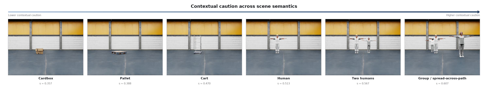
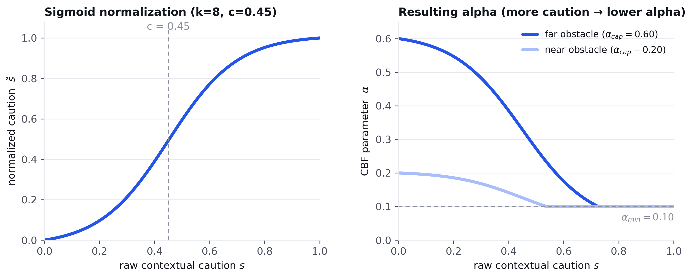

Semantically Adaptive Control Barrier Functions with Vision-Language Models for Real-Time Robot Navigation
A single prompt produces the caution score. Several phrasings were tested before choosing this one.
“A mobile robot shares this space with whatever is visible
ahead. How strongly should the robot yield and avoid imposing on,
disturbing or crowding what it sees? 0 = no need to yield, 1 = yield
strongly. Return strict JSON only:
{"score": <one decimal between 0.00 and 1.00>}.”
AlphaAdj reads the score from the model's next-token probabilities instead of waiting for generated text. One forward pass gives a probability over the digits 0 to 9, and the score is their weighted average. This keeps the signal continuous and avoids the delay of full text generation.

| Prompt strategy | Intended behavior | Observed effect | Selection |
|---|---|---|---|
| General yield framing | Ask how strongly the robot should yield to whatever is visible, without naming any object class. | Broad, graded response across object types and crowd sizes, beyond a simple person or object switch. | Selected |
| Consequence framing | Ask about the consequence of a close interaction with the scene. | Reduced overall variation. Compressed the difference between people and ordinary objects. | Reduced generality |
| Sensitivity framing | Ask about how sensitive or vulnerable the scene is. | Stronger response to some non-human clutter than to people present. | Reduced person sensitivity |
| Person-explicit framing | Ask directly about proximity to people. | The sharpest person-versus-object separation of any formulation tested. | Excluded, too narrow for a general-purpose signal |
The selected framing stays general. It responds to movable equipment and groups of people, not only a fixed “human” category, and stays graded rather than acting as a hard switch.
The caution score sets α through a normalized sigmoid. Its shape and center point were chosen by comparing several alternatives.

| Mapping | Behavior | Evaluation takeaway | Status |
|---|---|---|---|
| Shallow sigmoid (k=2) | Gradual semantic response, centered at the midpoint of the score range. | Smooth, but slower to react to a clearly cautious scene. | Evaluated |
| Steep sigmoid, center 0.50 (k8_c50) | Sharp response centered at 0.50. | Strong differentiation across most tested conditions. | Evaluated |
| Steep sigmoid, center 0.45 (k8_c45) | Sharp response, center shifted slightly earlier. | Earlier caution response. Selected final balance across the evaluated conditions. | Selected |
A single, globally conservative fixed α can reach a similar clearance around a person, but only by applying that same caution to every object it encounters, at roughly 3.5× the path cost of AlphaAdj's selective reserve in the benign case (see the matched-geometry comparison in the paper).